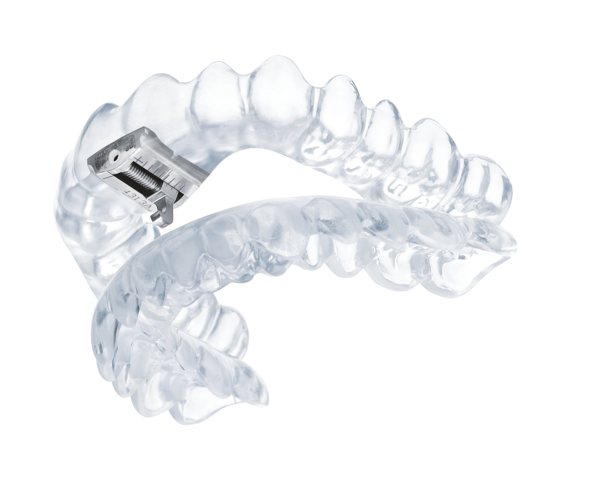
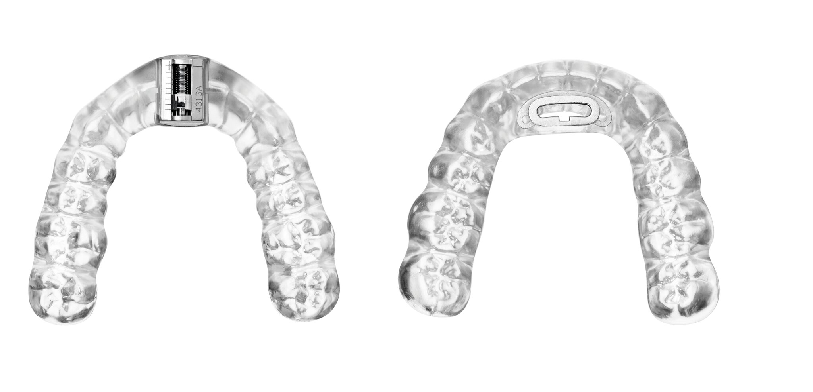
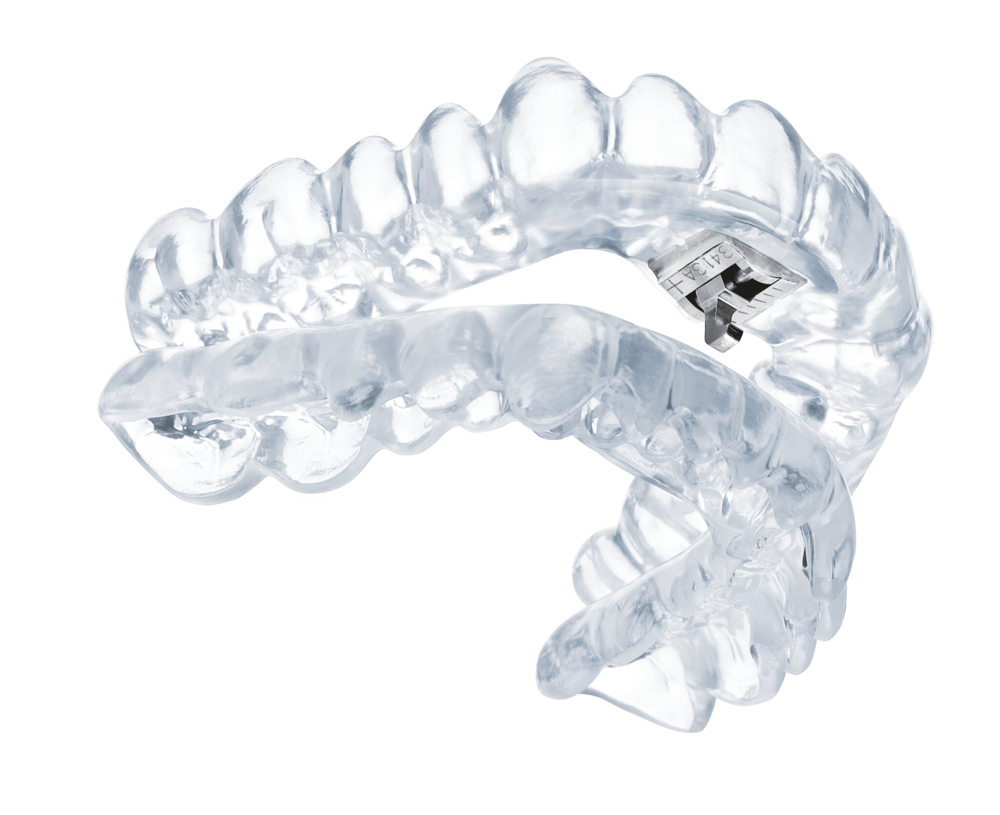

Innovation & Lebensqualität
Zertifizierter TAP® Schnarcher-Schiene
Gesunder und erholsamer Schlaf ohne Schnarchen. Die TAP®-Schiene ist ein wissenschaftlich anerkanntes und hochwirksames System zur Behandlung von Schnarchen und Schlafapnoe.
Zertifizierte Qualität: Zahntechnikermeister Erdenejargal Kobelt ist offiziell zertifiziert für die Herstellung der intraoralen Schnarch-Therapie-Schiene (dreamTAP® / TAP®-T).

Vorteile
TAP® – Die einfache und schnelle Lösung.
Egal, ob Schnarchen Ihre Beziehung oder Ihre Gesundheit bedroht – die einfachste Hilfe ist die TAP®-Schiene. Sie hält während des Schlafens Ihren Unterkiefer vorn, die Atemwege bleiben frei und Schnarchprobleme werden deutlich reduziert oder vollständig beseitigt. Eine anerkannte Alternative zur CPAP-Atemmaske (AASM/DGSM empfohlen).
Erwiesene Wirksamkeit
Bimaxilläre Geräte weisen eine hohe Erfolgsquote bei der Behandlung des Schnarchens und der leichten bis mittelgradigen Schlafapnoe auf.
Einfache Handhabung
Einsetzen und Entnehmen der Schiene realisieren Sie als Patient ganz einfach selbst.
Verträglich und Sicher
Alle Funktionselemente bestehen aus biokompatiblen und nickelfreien Werkstoffen.
Hoher Tragekomfort
Die Schiene wird individuell für Sie hergestellt, ermöglicht große Beweglichkeit und ist stufenlos einstellbar.

Das TAP®-T System
Bei dieser Weiterentwicklung wurden die Abmessungen der OK-Verstelleinheit wesentlich verringert, so dass die Protrusionsverstellung bündig in die Oberkieferschiene integriert ist. Der Lippenschluss ist damit jederzeit gewährleistet.
- ✔ Schiene aus biokompatiblem Kunststoff
- ✔ OK-Verstelleinheit aus biokompatiblem Titan (Implantat-Werkstoff)
- ✔ UK-Zentrierung aus nickelfreier, hochfesten Edelstahllegierung
- ✔ Für Patienten mit Nickelallergie verträglich
- ✔ Während des Tragens im Mund verstellbar
- ✔ Titration / Verstellweg: 7 mm
- ✔ Indiziert für Ausgangs-Bisslage Klasse I und III
Galerie & Ausführungen
Verschiedene Varianten und Detailansichten unserer individuell gefertigten Schnarcherschienen.

